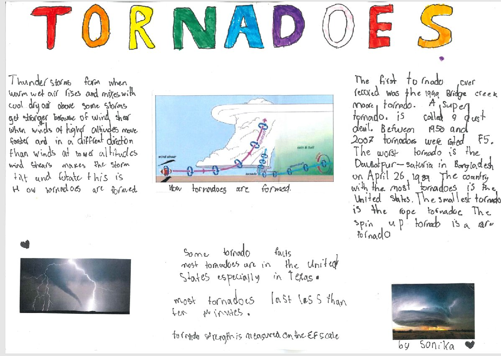
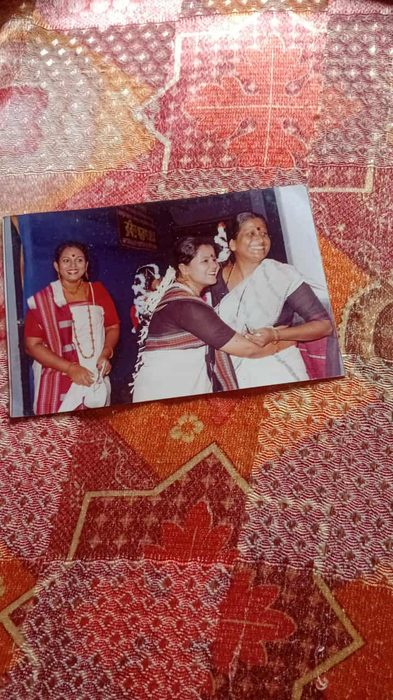
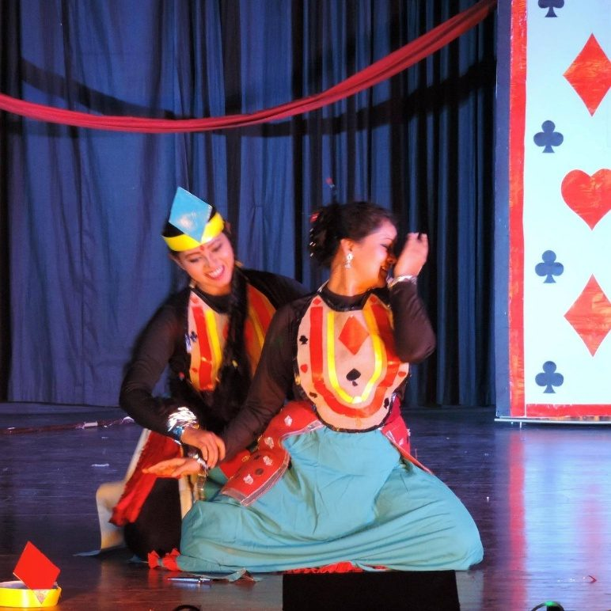
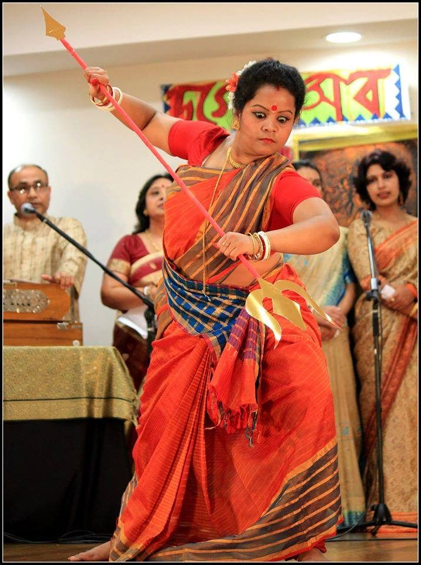

Stories, memories, and a dance through three decades — from our own TPCH members and their families, here in Tauranga and beyond.
Hi my name is Richa and I am from Papamoa, New Zealand. In my family I have mum, dad, little brother Noni and my pet budgie Pico.
Every Durga puja I love to dance, do anjali and have fun with family and friends. I love to join the little art competition. I also like to wear pretty dresses which I got from Kolkata. On puja morning me, my mum and my brother Noni get heaps of flowers from our garden, but Noni sometimes rips the flowers. I also love to draw, sketch and paint. Last year, I performed a dance show and I also participated in art competition. Also the things I love is birds because they fly and they have beautiful colours. I love budgies, macaws, sparrows and more. When I grow up I want to be like my mum. I love my family. Enjoy Durga Puja everyone.
Once there was a girl named Pearl and she was actually a real princess (not just in her dreams, but for real!).
Every morning, the maid would say, “Time to wake up, Princess!”
Pearl woke up, still half-asleep and searched for her shoes among the mountain of endless stuff. Pearl LOVED shopping - she bought way too much stuff, so her room looked like a tornado that ripped through the store.
One day, a magical bird named Reign, with delicate, emerald and sapphire feathers like jewels, flew in through her window.
Pearl screamed, “Maid, where are my black shoes?”
“The ones with buckles?” Maid asked.
Pearl agitated, “No! The ones with buttons!”
After a big search, the shoes were finally found.
“Princess, a note has been delivered for you” says the maid politely.
“Dear Princess Pearl, you are invited to the GRAND OPENING of Shoplandia! To get there, just say ‘UP UP Shoplandia’ and to exit, say ‘DOWN DOWN Shoplandia’” – the note says.
Pearl felt bubbles of excitement popping in her tummy. She grabbed some money, and with Reign, she yelled, “UP UP Shoplandia!”
Suddenly, she was in Shoplandia, a place packed with cool things - clothes, shoes, toys, candy, yummy ice cream, and loads of other stuff. Pearl was having the best time ever because EVERYTHING was free! Pearl got carried away. But little did she know that every time she grabbed something new, a tiny bit of her memories disappeared.
Slowly her memories started to fade away. Reign started to worry a lot and shouted, “DOWN DOWN Shoplandia!” Zoom! he was out.
Reign flew as fast as he could for a whole hour and finally found a little cottage in the middle of a rain forest. He yelled, hoping someone could help.
An old lady opened the door and whispered, “Come in, quick!”
Reign explained everything. The old lady nodded and said, “I am the wisest person in Shoplandia. Bring Pearl here and I can help.”
Reign hurried back, but by then, Pearl had forgotten almost everything - even her own name! He begged her to come see the lady, hoping she could help get Pearl’s memories back. Pearl though confused and clueless, she trusted the bird.
After an hour-long journey, they arrived at the cottage of the elderly woman who had given the instructions.
“Listen carefully. You are Princess Pearl. You were in Shoplandia and had lost your memories. To regain, you MUST give away all stuff you got from Shoplandia. Only then you would be free.”
Pearl followed the instructions. As she returned to Shoplandia, she started giving away all the things she gathered. Immediately she regained her memories and flew back with Reign to her palace.
“Reign, you are the best friend a princess could ever ask for! Thank you!” Pearl said.
The palace was never the same. Her room, once full of things and cluttered, now felt open, bright and instead of clothes on the ground you can see the elegant pattern on the ground.
Princess Pearl realised that life, friends and memories are the real treasures - not having too many material possessions. Reign and Pearl became the best pair of friends forever.
The end!!

The xarodiya season had commenced. Over Guwahati, clear blue skies with drifting white clouds met a gentle autumn breeze, and the city buzzed with anticipation for the upcoming Durga Puja. For me, at seven years old, this was the highlight of the year, my first Durga Puja in Assam. But this year was even more special, my six-year-old younger brother was finally old enough to join me in the festivities. His excitement mirrored mine as we prepared for the wonderful days ahead.
The Toy Shop Adventure
That morning, I could not wait to buy a new toy. Papa handed me a five rupee note. He gave my younger brother one too, so he could get something for himself. We hurried to Kalita uncle’s toy shop, a small shop next to a sweet shop on the main road. The shop was bustling with children, all busy picking out their favourite toys. Balloons and paper windmills hung above us. On the counter were my favourite toy pistols and red paper caps. I picked a black and silver pistol, and my brother picked a little red toy car. Outside, I loaded caps into my pistol and fired it to hear the sound. My brother pushed his car along the pavement, looking like the happiest person in the world. We walked home together, holding our new toys, excited for the evening.
Dressing Up for the Evening
As evening came, Maa dressed us warmly. I wore my blue checked shirt and sweater, while my brother wore his red sweater and shorts. “Stay together with us and don’t get lost” Maa said.
Pandal Hopping Magic
The streets were vibrant with activity, decorated with lights suspended across bamboo frameworks. Vendors had set up food stalls along the road, and the scent of jalebis and aloo chops filled the autumn air. Crowds surged toward the grand pandals, the air buzzing with excitement as the sound of dhaak drums rolled through the streets, mingling with laughter and the distant echo of conch shells. Everywhere you looked, women in bright sarees and men in crisp kurtas moved between stalls, their faces lit up by colourful fairy lights strung above the bamboo framework.
The first pandal we visited was a simple bamboo structure, draped with colourful cloth and woven mats. Strings of bare bulbs glowed overhead, casting a warm, familiar light on the clay idol of Durga. Inside, the ground was covered in carpets, and neighbours greeted one another, sharing sweets and laughter as the priest prepared for the evening’s aarti. The goddess Durga stood magnificent, her face painted with intricate detail, flanked by Lakshmi, Saraswati, Kartik, and Ganesha. The scent of incense mingled with the fragrance of flowers. The priest stood in front of the idol, ringing a bell and waving a tray of lamps as he performed the aarti. When he finished, he handed out payesh to everyone, which we ate happily.
Outside the pandal, the fair was in full swing. Stalls sold steaming plates of aloo chops and crispy jalebis, while further down, a man twisted hot sugar into pink clouds of cotton candy. We spotted a group of dhunuchi dancers swirling with incense holders, their feet moving in time with the drums as the crowd cheered them on. My brother tugged my hand, wanting to try the ferris wheel set up near the pandal field. The wheel creaked as we went up, giving us a dazzling view of the pandals glowing in the evening light. Back on the ground, Papa called us over to buy singara and jalebis, their syrupy sweetness sticking to our fingers.
As the night grew deeper, the pandals sparkled brighter, and the air buzzed with life-dances, songs, laughter, and the never-ending rhythm of the dhaak. We four walked home, our toys in hand, our hearts full of the magic and memories of Durga Puja in Assam.
A Thread Across Continents
As I walk down memory lane today, the scent of incense, the taste of syrupy jalebis, and the echo of dhaak drums all come rushing back as if I am once again that child, hand in hand with my brother, lost in the magic of our very first Durga Puja. Those memories, shining like fairy lights at night, stay in my heart and remind me of home and family.
Now, here in Tauranga, New Zealand, our small community of Probashi Indians gathers to celebrate Durga Puja with the same zeal and devotion every year.
So far from our country yet carrying its spirit within us. Even in this distant land, the enchantment of the festival lingers, shaping our love for celebration and strengthening the bonds that tie us together, across continents and generations. I also want to share those moments with my daughter, who was born in Aotearoa. Someday, I will take her to India during the festival so she can feel its magic the way I once did.
“Jai Maa Durga”
Festival, Friendships and Finding Home
Mrs. Prathima Rao, Tauranga, New Zealand
I was Fourteen when we moved to Shillong. By then, moving every few years was second nature—life as an Air Force family meant a trail of postings across India: Coimbatore in the South, Jamnagar in the West, Srinagar in the North, even a stint in the jungles of Madhya Pradesh. In between, there was always Bangalore, my birthplace. Just before Shillong, we had lived in Belgaum, a town in Karnataka bordering Maharashtra. Which meant the local culture was a mix of the two states – even the Kannada there had a touch of Marathi.
Arrival in Shillong
So, when we arrived in Shillong, I was curious, but also a little wary. Back home in Karnataka, the Northeast seemed like a faraway land—many simply called it “Assam,” unaware that seven states made up this region. Soon I learned that Shillong, often called the ‘Scotland of the East’, and the summer retreat of officials of British India, had become the capital of Meghalaya in 1972. Its hills carried the voices of the Khasis, Jaintias, and Garos, whose languages and music echoed everywhere.
Finding My Tribe
At St. Mary’s High School, I was welcomed warmly, but I couldn’t help noticing how different many classmates looked—features tracing back to Cambodia, Vietnam, even Thailand. It was fascinating and intimidating too. I gravitated toward girls who looked more like me. They happened to be Bengalis; families rooted in Shillong for generations. They embraced me instantly, without hesitation, and in their friendship, I found my anchor. They were the ones who opened the door to the magic of Durga Puja.
The Magic of Durga Puja
My first Puja experience was of dazzling rows of glowing pandals, the goddess radiant in red and gold, incense heavy in the air, dhak drums pounding. It felt overwhelming, yet strangely familiar, reminding me of Ganesh Chaturti in Belgaum, where communities raised pandals, cooked, sang, and celebrated side by side. Mysore Dussehra was all royal grandeur and spectacle, but Shillong’s Puja was something different—it was lived from the inside, a true community event.
Here, everyone belonged. Khasis, Bengalis, Nepalis and even newcomers like us joined in as organisers and volunteers. Each neighbourhood took pride in décor, lights, and cultural programs—blending Khasi songs, Bengali plays, and Western rhythms. Unlike Kolkata’s grandeur, Shillong’s Puja carried a homely warmth.
Did You Know? Durga Puja in Shillong dates back to 1896, with the first public puja organised in the Laban area.
Puja Studio Shots
One memory shines brighter than most: the khichdi bhog at the *Ramakrishna Mission*. The queue stretched endlessly, yet there was always room for more. My friends pulled me along, whispering tips—how to balance the steel plate, when to stop the labra to save space for payesh, even how to slip back into line for seconds. Year after year, Puja stopped being something I attended and became something I claimed. For me, Puja was more than a celebration—it was a rite of passage, proof that I had found my “tribe.” And for a teenage girl, there’s nothing more precious than finding that group where you truly belong. And of course, there were the *“mandatory portraits”— Our Instagram of the ’80s.
University and Beyond
When my father’s posting in Shillong ended, my parents moved on, but I stayed for university. By then, my friends and their families had become my own, offering love and support that filled the gap of living away from home. Though I stayed in a hostel, weekends and holidays were spent at their tables, in homes that welcomed me without question. University widened my circle further. Students from Assam and across the Northeast brought new songs, foods, and rituals—different ways of celebrating the same Durga Puja. Soon the festival blended seamlessly with Christmas carols, Diwali diyas, and Eid feasts.
It was here that I met Debu, who embodied Shillong’s cultural blend. Both our families were wanderers, and it felt natural to build a life together. Five years into marriage, with our little boy in tow, we set out again—this time to New Zealand, that far-off island most back home only knew as “near Australia,” with more sheep than people. Another chapter in our wandering story, and another home to claim as our own.
From Shillong to Aotearoa
That was twenty-three years ago. Hard to believe. It’s longer than I ever lived in any city in India, and yet the pattern continues. Here too, we’ve found a tribe—only now it’s global, with friends from every continent. Festivals are still our markers of belonging: Durga Puja and Diwali, but also Christmas and Matariki.
Looking back, I see a thread running through it all. Ganesh Chaturti in Belgaum, Dussehra in Mysore, Durga Puja in Shillong, and now multicultural festivals in New Zealand. Each different, each carrying its own rituals and flavours, yet all sharing the same spirit—community, celebration, renewal.
I’ve learned that home isn’t just where you were born, or even where your parents lived. Home is the community you grow into, the friendships that hold you steady, the festivals that gather you close, the tribe that makes you feel you belong. And as always, I look forward to what the next chapter of this wandering life will bring.
Evolution of Rhythmic oxygen: Indian classical and semi-classical dance journey
“Taka dimi taka junu”…Adi Thalum – the 8 beat cycle still buzzes in my ears and even after a few decades, whenever I compose any dance, glimpses of these notes flash in my heart and mind. At the age of two and a half years I started my formal training in Bharatnatyam (Indian classical dance). Initially, I did not enjoy these classes – partly because I was lazy, but at the same time I was anxious, shy, and scared, as my Gurumaa (Smt. Chandana Pal) was very strict during the classes. I still vividly remember my dance school dress – a white-red frock-cutting churidar. The Bharatnatyam classes were composed of both theoretical and practical sessions. The practical sessions comprised hand movements mainly called Mudras, followed by leg movements and facial expressions. The facial expressions include “Nobo Rosh” – these are the foundation pillars of facial movements and expressions in dance, and they are quite similar across other Indian classical dance forms such as Kathak, Odissi, Manipuri, Kuchipudi, and Mohiniyattam.

Me with one of my beloved teachers, Miss Anuradha Sen, at school – pampering me after my performance. I was in high school.
With the passage of time, as I was growing up, I unknowingly fell in love with dance – now I eagerly waited for my dance classes. My passion was well reflected in my art. Eventually, I was noticed amongst my peers for my dancing skills, and I managed to grab solo performances amongst huge competition in upcoming programs in my city, Kharagpur. Along with Bharatnatyam, I started my formal training in Rabindra Nritya as well – I was in 4th standard back then. My parents encouraged me and took me to Midnapore, the district town in West Bengal, to give me better exposure. Soon after completing my bachelor's degree in both Bharatnatyam and Rabindra Nritya from Pracheen Kala Kendra, Chandigarh University (affiliated to KUK, Kurukshetra, approved by the UGC), I started participating in wider dance programs and competitions at the district level. During this time, at a dance competition held during Durga Puja, I performed the famous Rabindra Nritya “Bodhu kon aalo laglo chokhe”, where I met Shri Anupam Kanti Chandra – a renowned Kathak dancer in the Midnapore region who received his formal training from Shri Birju Maharaj ji. Watching Anupam uncle's dance felt like submerging oneself into the Ganges – my dance-dream world came to a standstill. I wanted to learn Kathak from him, especially the Kathak speed technique and strategic stage utilisation, and I approached him humbly. Anupam uncle noticed me and welcomed my aspirations, but advised me to stick with my expertise – Bharatnatyam and Rabindra Nritya – as the dance forms were totally different. Meanwhile, he encouraged me to dance with him at various programs in and around Kharagpur and Midnapore – the golden period of my dance began. The first dance I performed with him, at the age of 14, was “Amar raat pohalo” – a Rabindra Nritya applauded by many renowned artists in the town. Our duo performances continued, ranging from Rabindra Nritya to lok nritya, modern Bengali songs, semi-classical songs, and instrumental music. Apart from Kharagpur and Midnapore, we also performed in various towns and cities across West Bengal, including Jhargram, Mecheda, Tamluk, Balichak, and Kolkata – and I cannot forget our performances specifically at Girish Mancha, Sisir Mancha, and Rabindra Sadan in Kolkata. During this time, I even earned the title of “Lashyamoyee” from Anupam uncle for my dance postures and expressions. I thank God for the opportunity to learn from these incredible mentors – amar sotokoti pronam! Just when I was at my rhythmic peak, I had to choose between my studies and my extra-curricular activities – it was so difficult to choose. I felt like a fish without water. Following the traditional norm, my dance journey paused for a few years as I prioritised my studies. However, the evolution of rhythmic oxygen continued, from my university days in India to New Zealand, and perhaps the journey will continue even after I am gone, through my daughter Pearl. I hope she will understand the essence of dance and love dancing like me one day!

Me playing the character of Horotoni from Tasher Desh – a dance drama by Rabindranath Tagore, during my IIT Kharagpur days, 2012.

My first dance performance, “Rupang dehi jayang dehi”, at Probasee 2015 Durga Puja in Auckland, NZ.
Dr. Palash Biswas, Tauranga, New Zealand
The year was 2011, and Palmerston North was my home—a quiet, cold, student city, nestled between green hills, and windmills. I was a PhD scholar at Massey University, my days steeped in research and the gentle rhythm of student life.
I was buzzing with excitement, about to set off on my big adventure. Flights were booked, hotels were confirmed, all the sightseeing were planned. I would be flying to LA, then staying at the University of Florida for six months before visiting Miami, Orlando, Seattle, Washington, and New York. I will then fly to Düsseldorf, take a train to Berlin, followed by overnight train to Switzerland, stay at my friend, Anewsha’s house in Lausanne and visit Interlaken in the Swiss Alps, Basel, Bern, Geneva, Luzern, before returning to Paris. After enjoying Paris for few days, I will fly to India to spend time with family before visiting sunlit, sky-scrapper filled Dubai, catching up friends in Melbourne, and then back to Auckland.
Night before my flight. Bags were packed. As dusk settled on Palmy sky, I stepped outside. I had to go to supermarket to buy few last-minute stuffs. That evening, the supermarket buzzed with life, aisles humming with the clatter of trolleys and casual chatter.
My mind engrossed with the details of my upcoming journey. Suddenly my phone rings.
Tring!! Tring!!
I fumbled for my phone, answering with a nervous, "Hello?"
A calm yet urgent voice replied, “Is this Mr. Biswas speaking?”
“Yes, this is Palash speaking”
“This is Sue from Air New Zealand. I’m calling to inform you that your flight has been cancelled—most flights have been diverted to Christchurch due to the emergency response.”
My heart sank - “but I have an international connection to the US?”
“Sorry, most flights are redirected to Christchurch to evacuate those stranded after the earthquake. However, there will be one flight departing early morning to Auckland. If you come to the airport early, there’s a chance you may get a seat if someone doesn’t show up.” Sue continued firmly.
“Thank you, Sue,” the shock settling in as I hung up.
February 22nd - Tuesday afternoon - a major earthquake struck in Christchurch, caused widespread damage, killing over 180 people. News of the earthquake had already begun to filter through. The devastation in Christchurch was overwhelming—it was a national emergency.
Returned home that evening, I explained everything to my flatmate, Ian.
“Don’t worry. We’ll leave early—if you can’t get on that flight, I will drive you to Auckland airport.” Ian assured me.
Restless, anxieties buzzing in my mind. At 3:00 AM, Ian and I set out for the Palmy airport, the city still cloaked in darkness. The terminal was already crowded with hopeful faces, everyone quietly desperate for a seat. Boarding began! I watched as names were called, seats are getting filled.
Ten minutes before the gate closed, no news! Almost giving up.
Five minutes to go…. Suddenly, over the loudspeaker, echoed my name.
"Mr. Biswas, please proceed to the gate for boarding. This is the final call."
With huge relief, I hurried to the counter. “You are lucky, that was the last seat.” —Lady said. When I finally boarded the flight, I looked out at the early morning sky, feeling so thankful.
Flying from Auckland to California via Nadi (Fiji), I landed Los Angeles after nearly 22 hours. I left New Zealand on Sunday and, after two days and crossing two oceans, it was still Sunday here. Jet-lagged, the date and time felt completely off.
When I finally stepped out of the LA airport, everything felt strange and different. The city was busy as usual. Every car driving by, every sound, and every palm tree reminded me that I was far from home, in a whole new place.
In the heart of California, I found out that next day is Oscar, I think it was the 27th February. I felt really lucky to soak myself on a star-studded journey. Oscar preparation was in full swing; you could feel the buzz at the Kodak Theatre. The vibrant energy of Los Angeles streets was palpable. I got a glance of the red carpet, surrounded by the glitz and glamour of the Hollywood.
Cannot explain the feelings. It seemed every street, every corner, the Madame Tussauds Museum, pub crawling, walking tour of the Hollywood actors' residences at Beverly Hills, models posing along the avenues, and the bustling shopping malls, Santa Monica beach - all telling a story. Who can forget the Hollywood Walk of Fame—a landmark with over 2,700 stars, embedded in the pavement along Hollywood Boulevard and Vine Street, honouring achievements.
Leaving the allure of Hollywood behind, I set my sights on the University of Florida, nestled in the city of Gainesville. My flight landed at Gainesville Airport at around 9:00 PM, the darkness of the Florida night enveloping me as I got off from the plane. The excitement and nervousness of starting my journey at the University of Florida were mixed with weariness after a long flight.
My host supervisor, Prof Jeffrey Brecht was supposed to pick me up from the airport, and so I waited, glancing at my phone for the messages. The airport was small, and with my flight being the last one for the night, most of the passengers had already left.
10:00 PM. I watched nervously as the airport staff closed up shop, and the terminal began to quiet down. My anticipation slowly turned into concern as the minutes ticked away, and there was still no sign of my supervisor.
As the clock inched past midnight, panic began to set in. I didn't know anyone in Gainesville, and the thought of being stranded at the airport was daunting. I approached the information desk, hoping they could assist me, but they could only offer sympathy and the suggestion to call my supervisor.
I ringed my supervisor. No luck—straight to voicemail, again and again. Back in 2011, phones weren’t great as today, mostly used for calls and texts, and playing games. I kept trying, but still nothing. Feeling a little lost, I opened my laptop to email him, but the battery died! All I could do was sit, wait, and hope my supervisor would show up.
Just when my anxiety reaching its peak, something amazing happened—must be Gods plan! Out of the blue, I spotted a familiar face in the terminal—Abhishek da (a senior from BCKV, my Alma mater in India) —wandering and looking for someone. At that time, he was pursuing his PhD at the University of Florida.
Remember old Orkut days. Facebook was not as common as today. Also, Instagram wasn't a thing back then. I contacted Abhishek da on Orkut before leaving New Zealand and told him when I’d get to Gainesville. He said, “I can pick you up from the airport”. But I told him not to worry because my supervisor would be there.
Strangely, Abhi da remembered my flight date and time. He wasn’t supposed to be at the airport that night, but don’t know why? He just went to the airport to check. What are the odds of that happening?
“Palash, tui ekhane? Tor supervisor aseni?” he was surprised to see me.
Feeling relieved, I hurried over to him, “Abhi da…thank you. Ami to bhabini tumi asbe (didn’t expect you will be here!).” I explained everything what happened.
He smiled, and pat on my back, “chal amar sange, amader flat e! Tomorrow morning we will sort it out”. We drove through the quiet streets of Gainesville to his apartment.
The next morning, he took me to the Department of Horticulture. As we arrived at the department, I saw my supervisor in his office. His eyes widened, looked relieved and apologetic. He explained that he had fallen asleep on the sofa while watching the Oscar that night and had only woken up at 2:00 AM. Panicked and embarrassed, he rushed to the airport, but by then, I had left.
Despite the initial hiccup, my time at the University of Florida stands out as one of the most rewarding and memorable experiences of my life. My days were a blend of research, experiments in the lab, taking classes, field visits, and friendly conversations over coffee, half-priced burgers Monday and jug of beers at a local bar, circles of friends from Greece, Peru and Mexico. My supervisor and I shared a laugh over the mix-up, and my senior became a cherished friend.
Sometimes, unexpected twists of fate lead us to the people who matter most in our journey. Gainesville had become a second home.
I visited Miami, known for its beautiful beaches, nightlife, and blend of Latin and American cultures. I walked along South Beach, including an interesting and unique experience in visiting a clothing optional beach. The city was full of energy, with colourful buildings and music playing everywhere. I tried Cuban coffee in Little Havana, explored beautiful gardens, and saw the city light up at night. Every part of Miami trip was fun.
Six months flashed by like a vivid dream. As they say, all good things must end. Time has come to say goodbye. Last few days were emotional rollercoaster, bittersweet. Cleaned the desks, lab notebooks packed, farewell dinners with close friends, promises to keep in touch and set off for next part of my journey - to attend an international conference in Leavenworth, Seattle.
What I didn’t expect, however, was the twist that awaited me.
Amid the excitement, I realised that my passport was still with the European consulate for my Schengen visa application. Emails bounced back and forth, calls were made, and each day brought mounting anxiety. Time was running out.
I had to fly. Being an international student at Massey University in New Zealand, originally from India, it was a nervous moment flying in US without passport. I decided to collect as much document as possible. Both my Professor and University Student Support Office provided me supporting letters.
Finally, the day arrived. My friend drove me to the Orlando International Airport, where I would be flying to Texas, then Seattle. We hugged and said goodbye.
Airports in the US are generally larger and busier than those in New Zealand. The terminal was crowded, and there was a long line for check-in. After queuing for nearly an hour, I reached the front of the check-in counter, bracing myself for what would come next.
Here is an officer with a commanding voice, “passport”.
“Sorry, I don’t have passport” – nervously I confessed.
Officer looked up with a cold eye and emotionless face “What? What you do you mean you don’t have passport”?
“Sorry, I had a passport, but I applied for a Schengen visa, I didn’t get back from the consulate yet.”
Officer turned back and pointed to another lady officer. She asked me to come aside.
“Where is your passport” – she asked me the same question.
I replied the same. The officer’s eyebrow soared like a startled hawk.
“Sir, what documents do you have as an ID proof?” she asked firmly.
I showed the NZ Driver licence, and University of Florida student ID card.
“What else you have” – she demanded.
I showed her the university letters.
“What else?”
I emptied my backpack, and wallet - showed all the NZ bank cards, credit cards, Massey Student ID, whatever I have.
“What else?” She asked again. Doubts lingering.
“That’s all I have” – I was anxious and felt uneasy.
She instructed me - just sit here. Then she started talking to someone over the walkie-talkie. Possibly her supervisor.
Here arrives a tall, overweight officer, tummy twice the size of Peppa pig’s daddy! Quite intimidating.
“Sir, where is your passport” queried the officer with a stoic demeanour.
“Sorry…...” Same question, same answer.
“What else do you have as ID proof”?
One after another, I showed everything again. Frustrated, he started calling someone on phone, perhaps his manager. I became very nervous.
Come another officer. Same sequence of questions! Same sort answers!
Two officers then started chatting privately as I anxiously waited for the verdict.
“All good, have a safe flight!” – the officer said at last. Till today, I wonder what has convinced the officer that day.
Anyway, the clouds started to part. Feeling relieved! Yet fate was not finished—there was another twist waiting.
Panicked, flustered, I went inside.
After the stressful interrogation and worries about missing my flight, I saw groups of people moving through the terminals on either side of a wall—some heading in, others coming out my way.
I followed the group of people who were going in. Little I knew those people was exiting the airport rather than heading to the gates.
Goodness me, worst happened. This was the very nightmare I dreaded at that moment.
I made an exit.
Once I realised, I turned back and tried to enter.
“Hey, where you are going, you can’t go this way, go back” – the security person yelled.
“Sorry Sir, I already checked in, but by mistake I made an exit” – I explained.
“No, you cannot come in, you have to check-in again”
“It was a genuine mistake” – I desperately said.
“Sorry, Sir you have to go back” – he firmly replied.
Realised nothing I could do; I hurriedly went back to queue.
Now panicked. Reality set in, my concern was that I would miss the flight, or I would not be permitted to board the flight.
Slowly, I moved to the counter….guess what!! In front of THE SAME OFFICER.
He looked up at me and immediately recognised. He started showing disbelief on his face, almost doubting himself. Sceptical and raised eyebrows, he said, “Hey you’re here again?”
I explained to him everything.
Looking at my poor face, he understood what happened, and started laughing!
“Go man, go, if you keep doing this, you will miss your flight” – he exclaimed with a hearty laugh and a bit of mercy.
Relieved, started running, 2 minutes before the gate closed. Finally, I am inside flight and flying. A close shave worthy of any cliffhanger.
Landed in Tacoma International Airport, Seattle, and then took a bus to Leavenworth where the conference was held. Leavenworth is a beautiful, charming Bavarian village nestled in the picturesque Cascade Mountains, about 200 kilometres east of Seattle.
Fortunately, my passport has arrived by now in Gainesville. My friend collected and couriered urgently.
After concluding the conference, I returned to coffee-loving city of Seattle. The Space Needle and Pike Place Market, Boeing Everett Factory were just a few of the iconic landmarks I explored before my next destination to New York. Times Square, Central Park, the Statue of Liberty, 9/11 WTC were included in my list. After spending few days in New York, I flew out from US on my way to Düsseldorf, Germany.
When I landed in Düsseldorf, I thought back to my crazy rush at the airport, almost missing my flight, and the long trip from Florida, the mountains of Washington to busy New York City. I got off the plane into a warm German morning, still excited from everything that had happened.
Life can be full of surprises, but sometimes things work out if we just keep going.
As I walked into the Berlin city, I had one more story to share.
No. Let’s stop here. I will tell next part of this journey in another time….!!